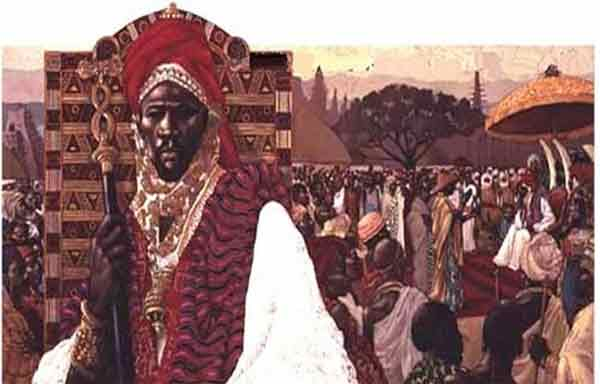
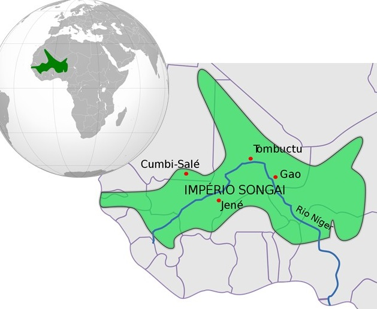
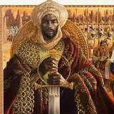
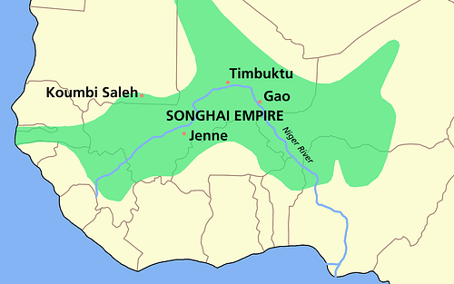
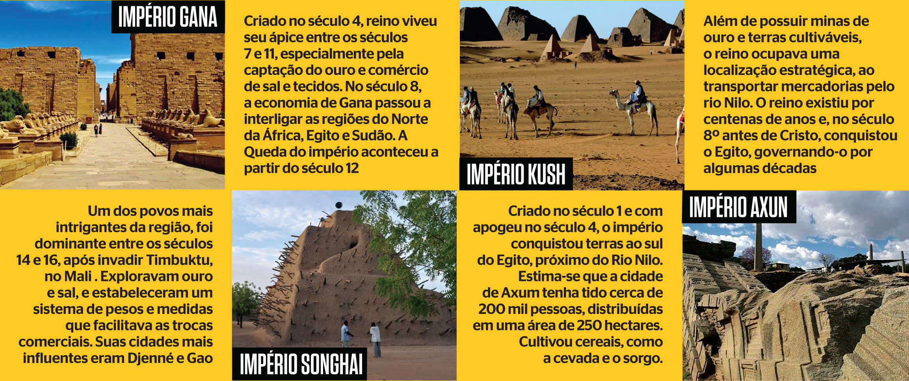

1 INFOR 2
Como era o Império Songai?
Com uma grande extensão territorial, o Imperio Songai tinha um comércio bem organizado e um sistema de governo centralizado. Eram divididos entre uma elite e a população geral e suas cidades mais influentes eram Tombuctu, Djenné e Gao.
Onde se localiza o reino de Songai?
Também chamado Songai, ou Sonrai, é um antigo reino da África Ocidental que se estendia pelas margens do Níger.
Como foi o fim do Império Songai?
Em 12 de abril de 1591, na batalha de Tondibi, perto do rio Níger, uma expedição marroquina esmagou o exército Songhai. Era o fim do poderoso Império Songhai, nome do povo africano que o constituiu.
Qual era a religião de Songai?
Tornou-se, então, o maior império da África de seu tempo controlando uma área de 1,4 milhão de km2. As cidades de Gao, Tombuct e Djenné eram os principais centros comerciais e religiosos do império. Suas mesquitas e escolas islâmicas (a religião oficial do império era o Islã) eram famosas no mundo islâmico.
Qual e a principal característica da sociedade Songai?
A característica fundamental da sociedade songhai era a hierarquização, que dividia a população em nobreza, homens livres, membros de castas de ofícios e escravos.

Compartilhe =]